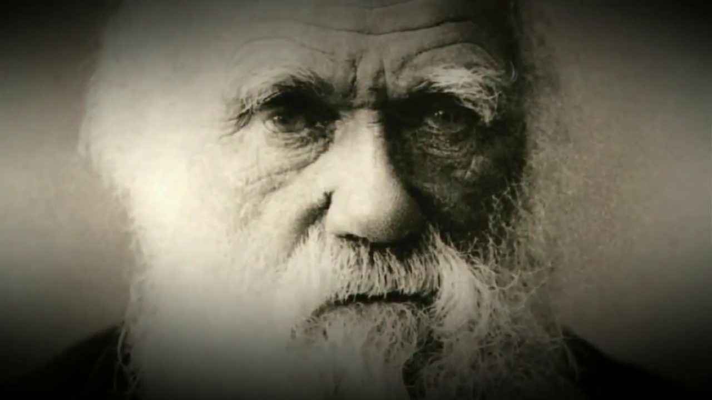

Teoría de la Evolución
Cuando hablamos de la evolución biológica, por lo general el primer nombre que viene a la mente es la de Charles Darwin. Sin embargo, no podemos atribuir todos los méritos a él, como Alfred Wallace también había notado que muchos de los aspectos que Darwin señaló en su discurso que mantuvo básicamente en secreto durante más de veinte años.
Sólo cuando Wallace envió a Darwin sus manuscritos - Debemos recordar que esto vino de expedición bien reconocido como científico - es que se vio obligado a publicar sus ideas. En el consejo de amigos, la teoría fue desarrollada con la autoría de los dos en 1858.
El diferencial de Darwin fue el conjunto de evidencias y argumentos a favor de la evolución que tuvo. Este hecho, junto con su posición líder en el mundo científico y la publicación de "El origen de las especies mediante la selección natural o la preservación de las razas favorecidas en la lucha por la vida", es lo que causa, la mayoría de las veces, que Sólo se le recuerda.
Dinosaurios del pasado, evolucionarán a las aves de hoy:
En ese momento, los mecanismos de la herencia y mutación no se conoce y, por lo tanto, tenemos la teoría sintética de la evolución (o neodarwinismo) como una versión mejorada de los principios desarrollados por Darwin y Wallace.
Los autores de la Teoría de la Evolución
Ahora que sabemos que los autores son, vamos a conocer los aspectos de esta teoría:
- In any group of species, all individuals have common ancestors, at some point in evolutionary history. So, are descendants of these, with modifications: result of natural selection.
- Los individuos de la misma especie, incluso parientes cercanos, tienen variaciones entre ellos, y el resultado de mutaciones o la reproducción sexual. Algunos de éstos se heredan, o se pueden transmitir a la siguiente generación.
- La limitación de la disponibilidad de recursos hace que los individuos de una población pelea, directa o indirectamente, para estos y para su supervivencia. Estas variaciones, algunas pueden ser ventajosos en esta dirección, permitiendo que algunos, en este escenario, se destacan y otros no. Este último no puede sobrevivir ni pueden reproducirse.
- Los que sobreviven (del más apto), puede transmitir a su descendencia una característica tal que permitió a su victoria, si es hereditaria.
-Este proceso se llama resultados de la selección natural en la adaptación de ciertos individuos para el medio ambiente, en comparación con otros no adaptado, y también la aparición de nueva colisión espécies.meteoric con la tierra, contribuyó a la selección natural.
La selección natural es muy similar a lo artificial, sólo este último es el resultado de las acciones humanas (directo o indirecto) sobre un cuerpo dado. La penicilina, por ejemplo, fue hace décadas utiliza ampliamente como el principal agente de lucha contra las bacterias y en la actualidad no es eficaz en el tratamiento de algunas enfermedades: resultado de la selección de bacterias resistentes debido al uso indiscriminado de esta sustancia.
En el día, a menudo nos referimos con el término "teoría" como algo superficial, simplón, una especulación. Sin embargo, en investigaciones científicas, el término se refiere a una hipótesis confirmada por numerosos experimentos con alta precisión por un largo tiempo.
Por lo tanto, estos son lo suficientemente digno de credibilidad. La teoría de la evolución, así como la Teoría de la Gravitación Universal, son algunos ejemplos.

Teoría de la Evolución - Lamarck
Jean-Baptiste Lamarck (1744-1829), naturalista francés, fue el primer científico en proponer una teoría sistemática de la evolución. Su teoría se publicó en 1809 en un libro llamado la filosofía zoológica.Según Lamarck, el principio de la evolución se basa en dos leyes fundamentales:
La utilización o no utilización de Derecho:
El uso de ciertas partes del cuerpo hace que estos, para desarrollar y desuso causas a la atrofia.Ley de la transmisión de los caracteres adquiridos:
Causó cambios en ciertas características del organismo, el uso y el desuso se transmiten a la descendencia
.
Lamarck utiliza varios ejemplos para explicar su teoría. Según él, las aves acuáticas se convirtió en el vadear debido al esfuerzo realizado con el fin de estirar las piernas para evitar mojar las plumas durante la locomoción en el agua. Cada generación, este esfuerzo producido aves con patas altas, que transmiten este rasgo a la siguiente generación. Después de varias generaciones, que se han originado limícolas actuales.
La teoría de Lamarck actualmente no está aceptado porque sus ideas tienen un error básico: los caracteres adquiridos no se heredan. Se encontró que los cambios en las células somáticas de los individuos no alteran la información genética contenida en las células germinales, no siendo por lo tanto heredada.

Teoría de la Evolución - Darwin
Charles Darwin (1809-1882), naturalista Inglés, desarrolló una teoría de la evolución que es la base de la teoría sintética moderna: la teoría de la selección natural. Según Darwin, los organismos mejor adaptados a su medio ambiente tienen más probabilidades de sobrevivir que los menos adaptados, dejando a un mayor número de descendientes. Los organismos mejor adaptados por lo tanto se seleccionan para ese entorno.
Los principios básicos de las ideas de Darwin se pueden resumir como sigue:
- Los individuos de la misma especie variaciones presentes en todos los personajes, no siendo, por tanto, idénticos entre sí.
- Cada organismo tiene una gran jugabilidad, produciendo mucha descendencia. Sin embargo, sólo algunos de los descendientes llegan a la edad adulta.
- El número de individuos de una especie se mantiene más o menos constante a lo largo de generaciones
- Por lo tanto, existe una gran "lucha" por la vida entre los descendientes, porque aunque muchos individuos nacen simplemente alcanzar la madurez, lo que mantiene constante el número de individuos de la especie.
- En la "lucha" por la vida, los organismos con variaciones de las condiciones ambientales favorables en las que viven son más propensos a sobrevivir en comparación con las organizaciones con variaciones menos favorables.
- Los organismos con estos cambios beneficiosos son más propensos a dejar descendientes. Como no hay transmisión de padres de caracteres para los niños, estos tienen dichas variaciones ventajosas.
- De este modo, a lo largo de las generaciones, la acción de la selección natural en las personas mantenen o mejoran el grado de adaptación de éstos a la mitad.

La teoría sintética de la evolución
La teoría sintética de la evolución o neodarwinismo fue formulado por varios investigadores durante años de estudio, tomando como ideas esencia de Darwin sobre la selección natural y la incorporación de los conceptos genéticos actuales.
La contribución más importante de la genética, extraído de el trabajo de Mendel, sustituyó al antiguo concepto de patrimonio mediante la mezcla de sangre con el concepto de herencia a través de partículas: los genes.
La teoría sintética considera como Darwin había hecho, la población como unidad evolutiva. La población puede definirse como un grupo de individuos de la misma especie que se producen en la misma zona geográfica en el mismo intervalo de tiempo.
Para entender mejor esta definición, es importante conocer el concepto de especie biológica: un grupo de poblaciones naturales, real o potencialmente cruzarse y reproductivamente aislados de otros grupos de organismos.
Cuando esta definición, se dice capaces de entrecruzarse, significa que una especie puede tener poblaciones que no crucen de forma natural, ya que están separados geográficamente. Sin embargo, colocada artificialmente en contacto, habrá un cruce entre individuos, con descendencia fértil. Por lo que están capaces de entrecruzarse.
La definición biológica de las especies sólo es válido para los organismos con reproducción sexual, como en el caso de las similitudes entre las características morfológicas es definir los grupos de especies.
La observación de las distintas poblaciones de individuos con reproducción sexual, se puede observar que no hay por igual individual. Execeções a esta regla podrían ser los gemelos monocigóticos, pero incluso ellos no son absolutamente idénticos, aunque la herencia genética inicial sea la misma. Esto puede ocurrir porque los cambios somáticos debido a la acción del medio.
La enorme diversidad de fenotipos en una población es indicativa de la variabilidad genética de esta población se puede observar que esto es por lo general muy amplia.
La comprensión y fenotípica variabilidad genética de los individuos en una población es crucial para el estudio de los fenómenos evolutivos, ya que los desarrollos son las poblaciones de procesamiento realidad estadística con el tiempo, o incluso cambios en la frecuencia de los genes que la población tiene.
La factores que determinan los cambios en la frecuencia de genes se llaman factores evolutivos. Cada población tiene una reserva genética, que sujeta a factores evolutivos, se puede cambiar. El patrimonio genético de una población es el conjunto de todos los genes presentes en esta población. Por lo tanto, la mayor variabilidad genética.
Los factores evolutivos que actúan sobre la reserva genética de la población tienen dos categorías que se puede obtener:
- Los factores que tienden a aumentar la diversidad genética de la población: mutación genética, mutación cromosómica, la recombinación;
- Factores que influyen en JAS establecidos variabilidad genética: selección natural, la migración y la deriva genética.
La integración de estos factores asociados con el aislamiento geográfico puede conducir, con el tiempo para el desarrollo de mecanismos de aislamiento reproductivo, mientras que, a continuación, son nuevas especies.